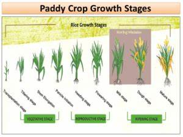
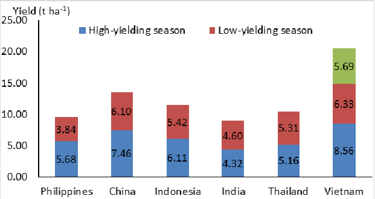

Crop Recommendation System

Paddy, also known as rice, is one of the most important cereal crops globally and a staple food for a significant portion of the world's population, particularly in Asia. Here are some key points about paddy crops:
1. Botanical Information: Paddy is a member of the grass family (Poaceae) and the genus Oryza. The most commonly cultivated species is Oryza sativa (Asian rice) and Oryza glaberrima (African rice).
2. Cultivation: Paddy cultivation requires specific conditions including warm temperatures, ample water supply (either rain-fed or irrigated), and fertile soil. It is commonly grown in flooded fields called paddy fields or rice paddies.
3. Varieties: There are thousands of varieties of rice cultivated worldwide, with different characteristics such as grain size, color, aroma, and cooking qualities. Varieties are often selected based on factors like climate, soil type, and consumer preferences.
4. Growth Cycle: The growth cycle of paddy typically includes stages such as land preparation, seeding or planting, crop establishment, vegetative growth, flowering, grain formation, and finally, harvesting.

5. Importance: Rice is a staple food for over half of the world's population, particularly in Asia, where it is a dietary staple. It provides essential nutrients and calories, making it a crucial food security crop.
6. Economic Importance: Paddy cultivation contributes significantly to the economies of many countries, both in terms of agricultural production and employment. It is often a major source of income for smallholder farmers.
7. Environmental Impact: Paddy cultivation has both positive and negative environmental impacts. While it provides habitat for various aquatic species and can contribute to soil fertility if managed sustainably, it also consumes large amounts of water and can lead to issues such as water pollution and methane emissions.
8. Processing and Consumption: After harvesting, paddy undergoes processing to remove the outer husk, resulting in brown rice. Further milling removes the bran and germ, yielding white rice. Rice is consumed in various forms including boiled, steamed, fried, or ground into flour for making products like noodles and bread.

Overall, paddy cultivation plays a vital role in global food security and the livelihoods of millions of people worldwide.